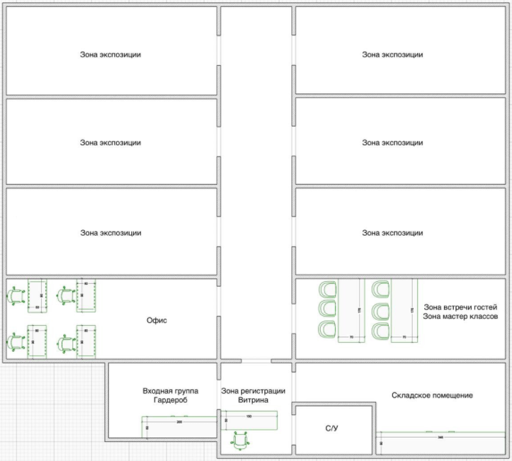

Концепции музея "Светлица"
(современный минималистичный витринный + немного историческая атмосфера)
Основная идея:
Украшения — это не просто предметы красоты, а особый язык, которым разные народы мира передают свои традиции, верования, социальный статус и представление о красоте.
Пространственная идея:
Интерьер музея остаётся достаточно спокойным и современным, чтобы не отвлекать от экспонатов, но и защитить их. Используются минималистичные витрины с подсветкой, нейтральные цвета стен и аккуратные музейные конструкции.
При этом атмосфера поддерживается тёплым светом, текстурами и графическими элементами, напоминающими о традиционных орнаментах разных культур.
Структура залов (по странам)
1. Зал Ближнего Востока - Иемен
Тема — украшения как защита и амулет.
Этот зал посвящён украшениям арабского происхождения, где древние изделия играли не только декоративную, но и защитную роль. Многие украшения содержат амулеты, символы и подвески, которые согласно традиционным представлениям защищали владельца от злых духов и приносили удачу.
Интерьер зала может быть дополнен орнаментальными элементами, напоминающими традиционные костяные узоры, и мягким освещением, подчёркивающим тонкую работу мастеров.
Экспонаты зала:
- Бедуинские кольца с амулетом «хирз»
- Колье
- Кольца
2. Зал Центральной Азии - Туркмения
Украшения как символ статуса и семейных традиций.
Туркменские украшения отличаются выразительным декоративным стилем и использованием крупных подвесок и амулетов. Они являлись важной частью костюма и могли передаваться по наследству.
Особое внимание в культуре туркмен имели амулеты, которые должны были защищать человека и приносить благополучие.
Экспонаты зала:
- Подвеска «Гол-Асык»
- Подвеска-амулет «Дагдан»
- Подвеска-амулет «Тумар»
- Традиционные туркменские серьги
3. Зал Южной Азии и Африки (2 в одном)
Индия, Нагаланд и Западная Африка, Северная Африка.
Украшения как часть ритуалов и обрядов.
Украшения Южной Азии отличаются яркой декоративностью и разнообразием форм. Они играют важную роль в ритуалах, праздниках и традиционных костюмах.
В индийской культуре украшения символизируют красоту, благополучие и социальный статус. Многие изделия связаны с обрядами и семейными традициями.
Особое внимание уделяется украшениям, которые выполняли защитную функцию.
Экспонаты зала:
- Гривна «Хансули» (Индия)
- Колье-гривна из Нагаланда
Украшения как знак принадлежности к племени и культуре.
Украшения народов Африки часто связаны с племенными традициями и символикой. Они могут обозначать социальное положение человека, его возраст, семейный статус или принадлежность к определённому сообществу.
Особое место занимают амулеты, которые выполняли защитную функцию.
Экспонаты зала:
- Туарегский кольцо-амулет «Tisek»
- Застёжки-фибулы (Северная Африка)
4. Зал Горных культур - Афганистан и Пакистан
Украшения горных регионов отличаются массивностью, богатством подвесок и сложной формой. Такие изделия носили как знак статуса, семейного положения или принадлежности к определённому племени.
Особое внимание в этом зале уделяется крупным шейным украшениям, которые могли быть частью праздничного костюма.
Экспонаты зала:
- Спиральная гривна «Orai» («гер») из Афганистана
- Гривна с подвесками
- Традиционное колье племени Вазири (Пакистан)
5. Зал Восточной Азии - Китай
Украшения как элемент эстетики и символики.
Украшения Китая отличаются изяществом и тонкой декоративной работой. Они часто использовались как часть традиционного костюма и могли иметь символическое значение.
Некоторые украшения предназначались для особых причёсок или являлись элементами праздничного наряда.
Экспонаты зала:
- Височные серьги
- Заколки для волос
6. Зал Европейской культуры - Италия, Болгария
Украшения как элемент костюма и моды.
Этот зал посвящён европейской традиции украшений, где изделия тесно связаны с костюмом и модой. В европейской культуре украшения часто выполняли не только декоративную функцию, но и подчёркивали социальный статус владельца.
Особое внимание уделяется украшениям народного костюма.
Экспонаты зала:
- Торговые венецианские бусы
- Колье
- Брошь
- Подвеска
- Браслет
- Перстень
- Серьги
Смысл концепции:
Посетитель проходит путь через разные культуры и понимает, что украшения — это универсальный язык человечества, который существует во всех уголках мира.
